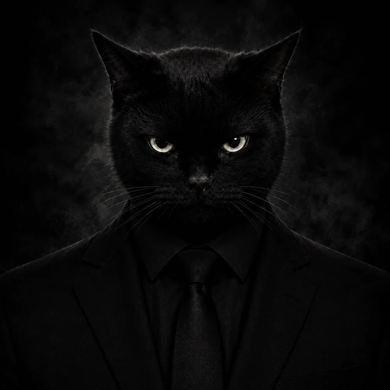
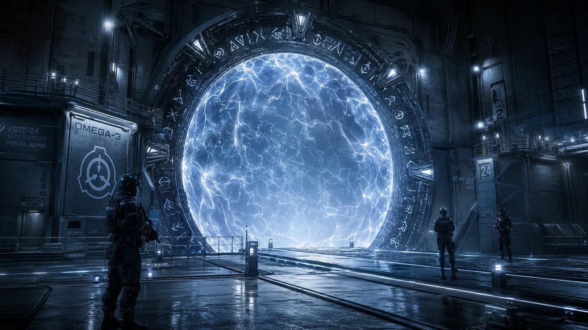
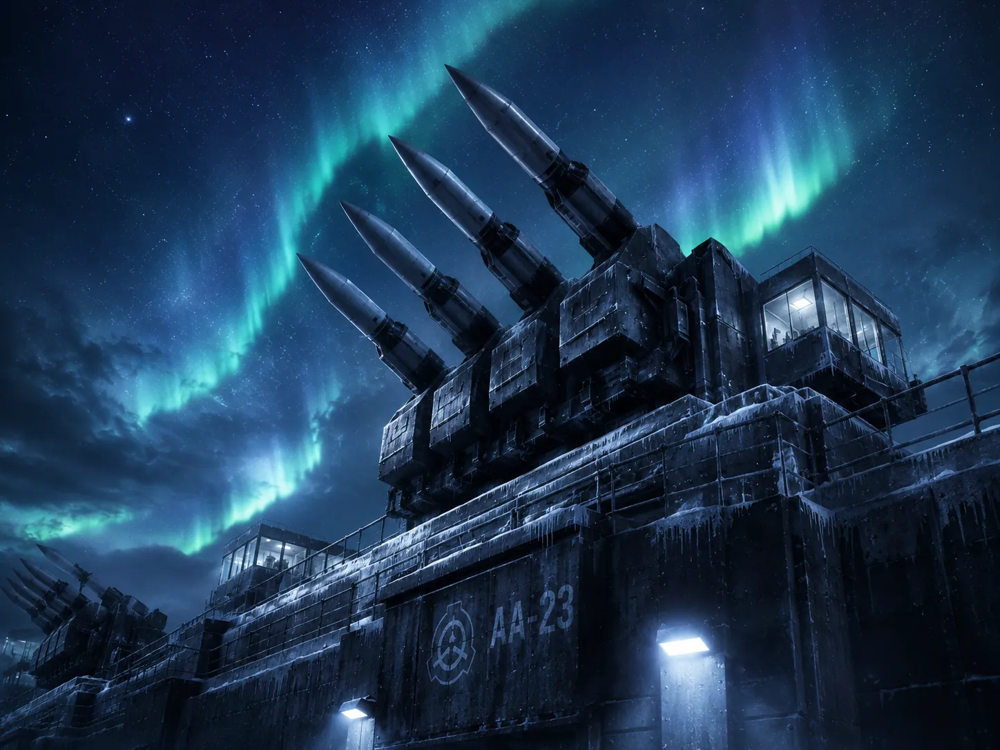
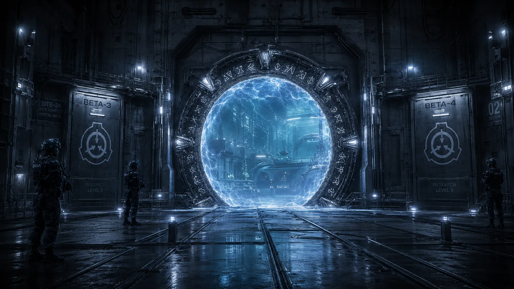
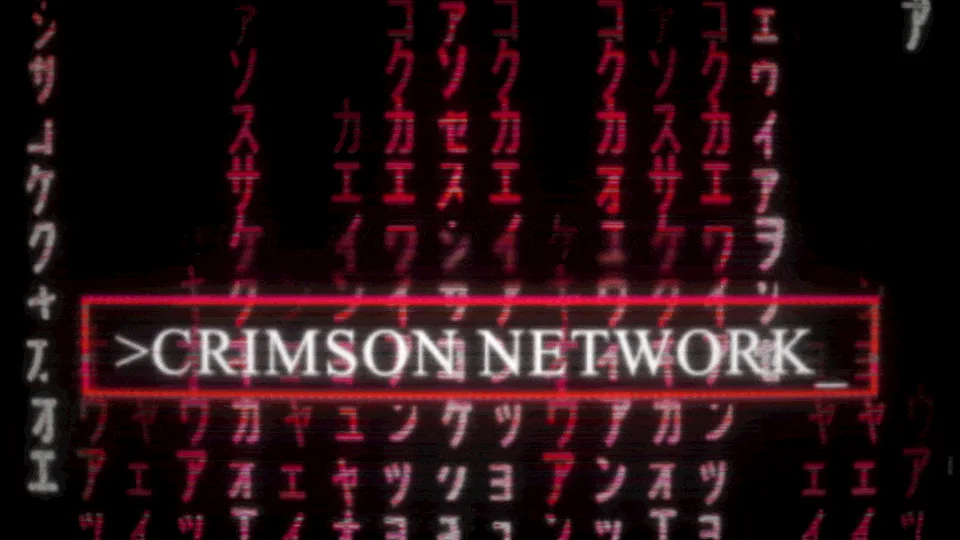
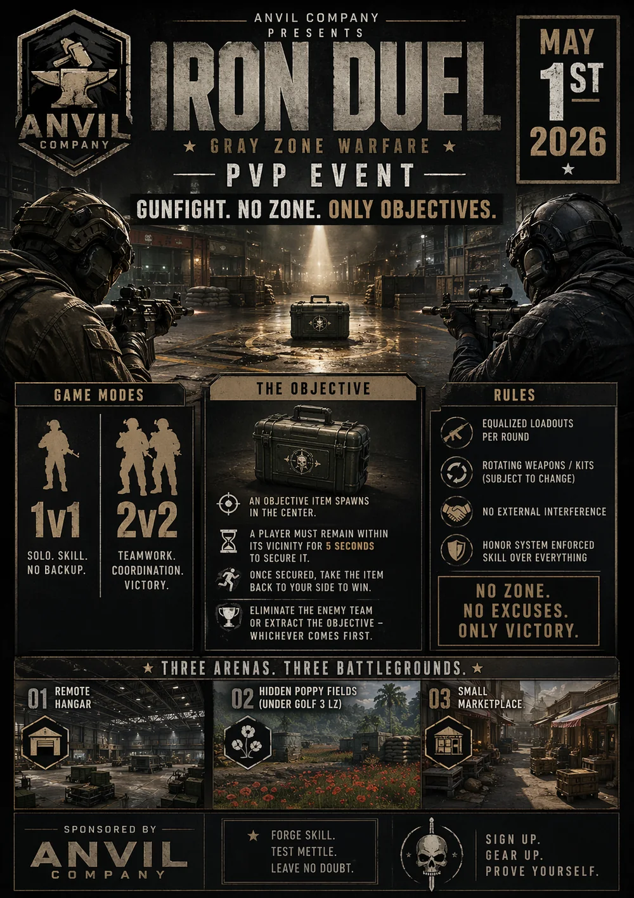
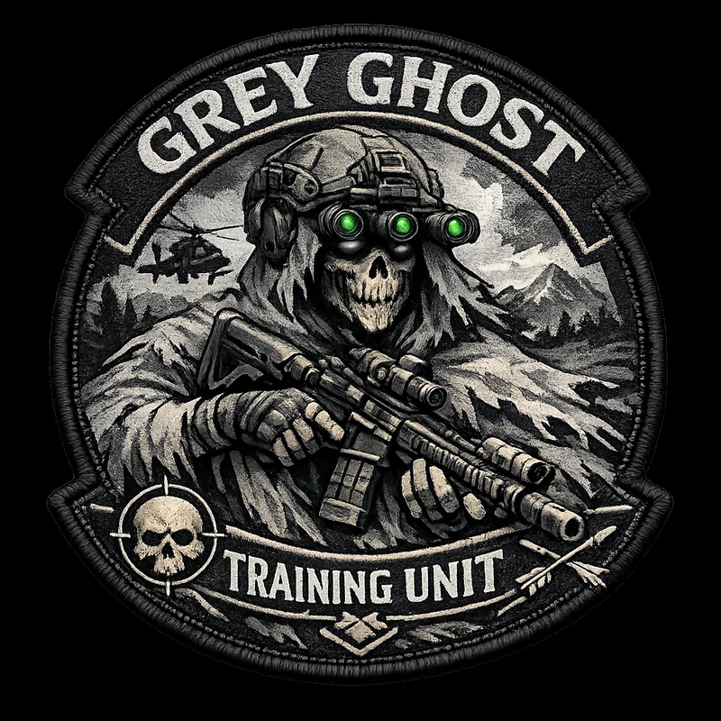
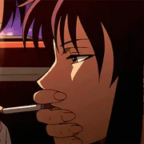

Community launch
Structure, channels, first events and the opening momentum most servers never get. Zero to active.

Community architect & writer. I take a new or dying community and make it alive — then run the onboarding, governance, teams, events, and the growth & outreach that keep it that way.
00 / Positioning
Structure, channels, first events and the opening momentum most servers never get. Zero to active.
Turn sign-ups into regulars. New members reach a real first interaction within a day — not never.
Clear rules, fair enforcement tiers, mod-log discipline, and standards that hold under pressure.
Recruit, train and structure a staff team with department heads — one that runs the place without you in the room.
Grow through targeted outreach, partnerships and relationship-building — identifying relevant communities and decision-makers, personalised outreach and follow-ups, collaboration planning and long-term partnership development.
Recurring events and campaigns that give people an actual reason to come back tomorrow.
Announcements, rules, guides and original worldbuilding that people actually read. I write every word.
Content planning, scheduling and multi-platform clip campaigns that pull new members from outside your server.
Full server setup, verification, anti-nuke and anti-raid protection, and the infrastructure that keeps it safe.
I help communities grow through targeted outreach, partnerships, and relationship-building — from identifying relevant communities and decision-makers to personalised outreach, follow-ups, collaboration planning, and long-term partnership development.
Finding and reaching the right communities, then turning that reach into members and real momentum — not vanity numbers.
Building long-term partnerships with communities, creators and studios — relationships that compound, not one-off shoutouts.
Identifying and approaching relevant Discord servers for cross-promotion, partner channels and collaboration.
Mapping the landscape — relevant communities, decision-makers and the right person to actually contact.
Planning and running collaborations that put your community in front of aligned, already-warm audiences.
A repeatable outreach process with personalised messaging, follow-ups and tracking — so growth is a system, not guesswork.
An 18+ sci-fi roleplay world I've built and directed since day one — from a cold launch to a living community.
I've been on Project Aurora since day one — first as consultant, then Canon Director, now Executive Director on the Aurora Board. Roughly 99% of the build is my work: onboarding, governance, events, canon, security and the full visual identity.
Every community faces the same wall twice: the cold launch, where an empty server has to become a place worth returning to — and the slow death, where the launch buzz fades and activity quietly bleeds out.
Aurora is the proof I can win the first one. The systems below are how I hold the second.
A cold launch I ran and drove from 9 messages on day one to 2,508 on day fourteen — the launch-and-engagement problem most communities fail. Sustaining it long-term is the job of the systems below.
SCPs enter play uncontained; members roleplay containment, run the research and file after-action reports into a living operational database.
Trusted members claim each new sign-up within 24h, run their first scene, and check in at day 3 and 30. Success = still active after 30 days.
Full staff structure with defined roles and departments, plus recruitment posts, graphics and application flows to fill them.
Four severity tiers, escalation, a discretion clause and appeals. Age policy and safety built in from day one.
Mod-log systems, anti-nuke and anti-raid protection, verification, and the server setup that keeps the place safe.
A step-by-step event process and detailed live briefings that keep large group events readable.







An international multi-game network I directed — and the self-running team I built to run it.
Crimson Network (Crimson Shield International) is an international multi-game community. I came in as Overseer (general director), moved into Staff Manager, built a self-running staff team — then handed it off to focus on new projects.
The mark of a good system is that it runs without you. I built a staff team with department heads that outlived my involvement — trained, structured and handed over cleanly.
Peak ~1,400 members. Full growth & retention metrics available on request.
Recruited and trained a team with department heads that outlived my involvement — the whole point.
A leveling system and role hierarchy that reward activity and give members somewhere to climb.
A member-to-member trade reputation system, plus a clan, a Steam group and a private game server.
Rebuilt the network around what members actually use, not what looked complete on paper.
Member-feedback-driven changes — the loop that makes people feel a place is theirs.
Retention analysis, marketing, and a game-studio community partnership to pull in reach.





“Joey built the backbone of both my communities. On Aurora he took an empty server to thousands of messages a day and designed the onboarding, rules and events that kept it running. On Crimson he built and trained a staff team that ran itself after he moved on. He's who I'd trust with community structure.”

MikeyOwner & Founder · Crimson Network / Project Aurora
“Clearly documented, showing exactly what needed to be adjusted or added, and which parts were your own design. Your critical analysis of our structure is a skill highly valued; I would most certainly recommend you for a position where you can express it to the fullest.”
XMG MajorHDS Division · The Art of Warfare
— The through-line
Author of a 75,000-word science-fiction novel, a national-level writing award, and Cambridge C2 Grade A (Writing 200/200). Every announcement, rule and lore document in this dossier is written by me — the tone of a community is the community.

Founder and owner. Built structured servers from scratch and organised staff teams.
Lead developer and organiser. Launched after a teaser campaign; built political structure, lore and automated systems.
Co-owner. Rose through staff to faction co-lead; set staff-management and communication standards.
Contributor to a 3,000+ member military-gaming network. Wrote a strategic analysis and a server-improvement consult focused on user psychology, retention and growth.
Overseer → Staff Manager. Built the staff team, then handed off to focus on new projects.
Consultant → Canon Director → Executive Director. Cold launch to a living 18+ world; ~99% of the build.